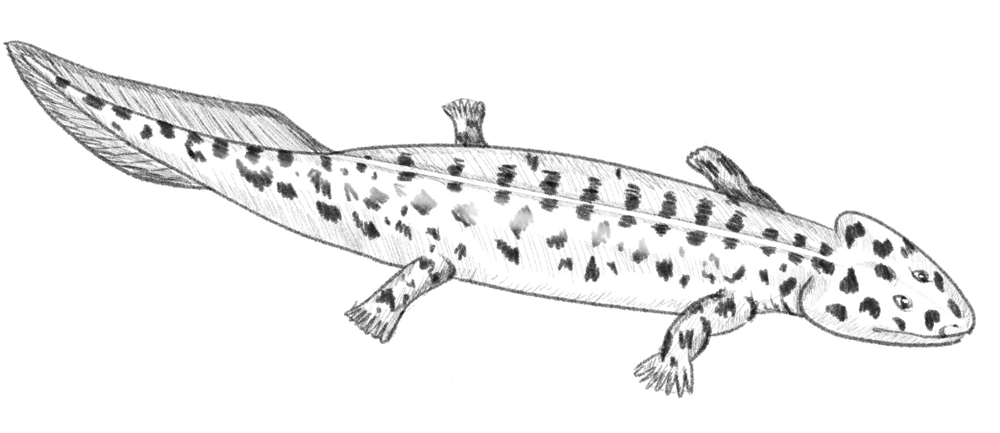
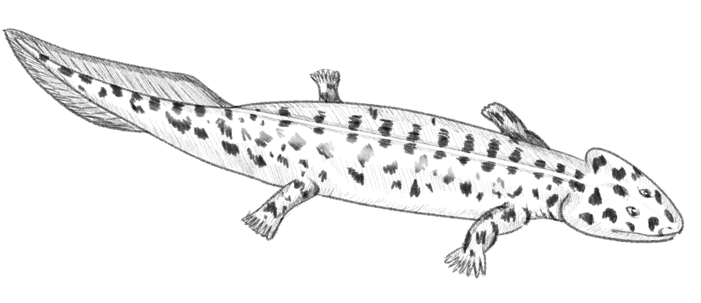

Acanthostega, from the Devonian period, occupies an odd place in the journey to tetrapods. It’s features suggest that it may have been mobile on land, but they also suggest what was more likely a majorly aquatic life. Its spine and ribs were not built to support weight on land, and despite having large legs, they didn’t have proper joints to provide a successful terrestrial life. Its belly featured heavy scales, which may have provided armour against dragging along the ground, though this would make sense if it spent its time in shallow water. The creature had lungs as well as gills, allowing it to procure oxygen from the air as well as the water. All of these features suggest that Acanthostega was a swamp-dwelling predator. Its primitive legs would have allowed it to move through debris and plant filled waters. Acanthostega’s key feature is its teeth and jaw, which is impressive in comparison to the standard suction method used by other fish for feeding. Acanthostega has two fangs, meant for biting onto its food. This hunting method suggests that this creature hunted in shallows as opposed to exlusively in deeper waters. Acanthostega fossils have been found in Greenland, and were initially only pieces of the animal’s skull, but now make up one of the best preserved species thanks to further findings.